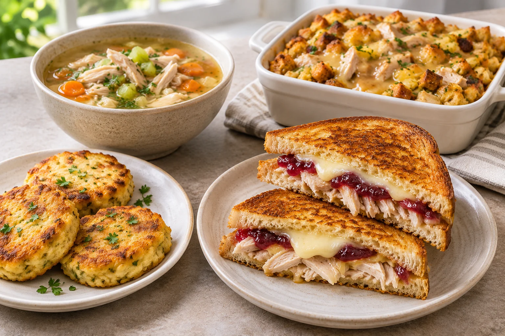
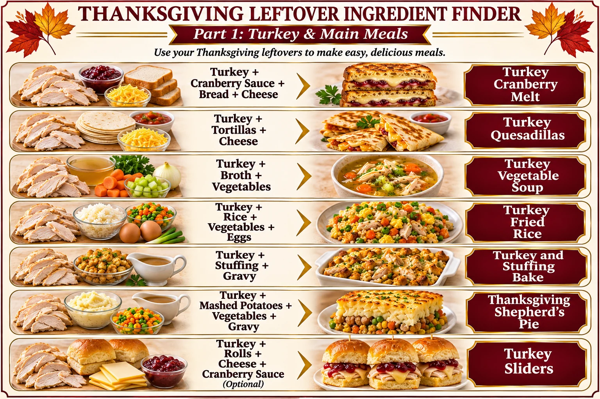
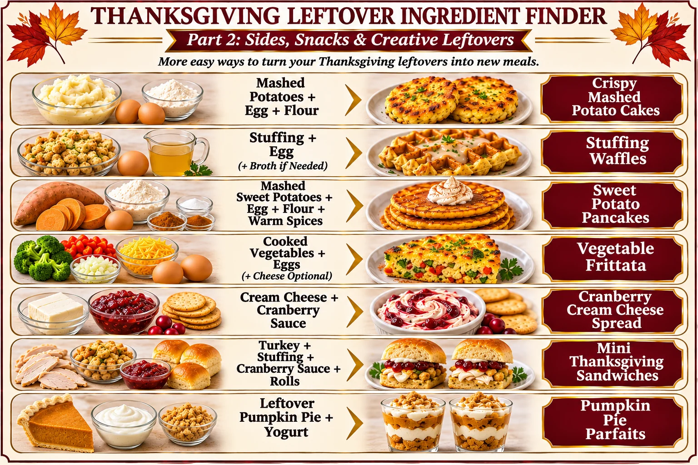
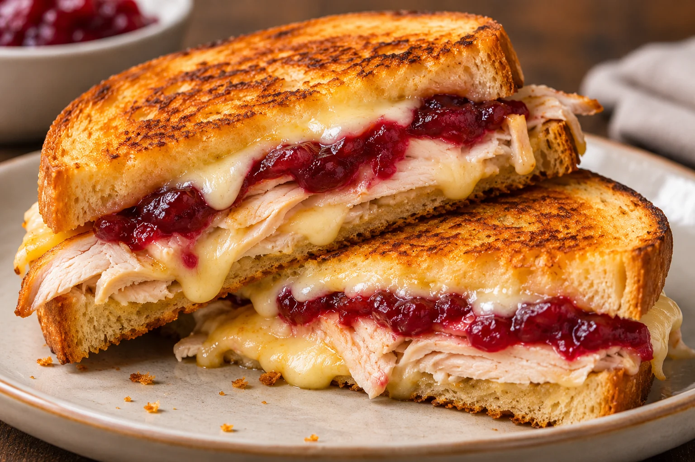
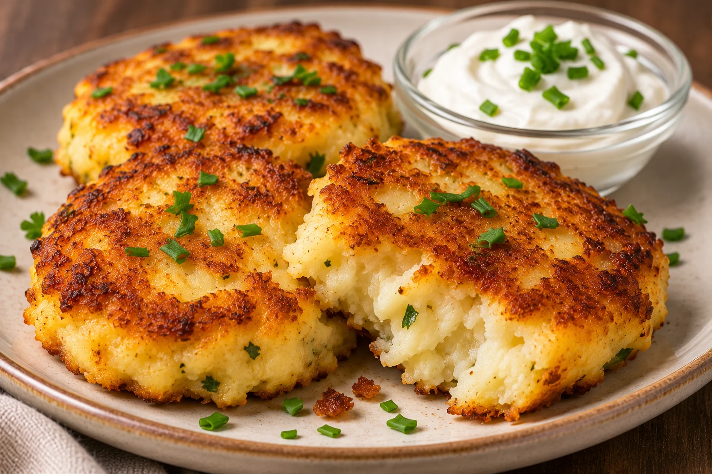
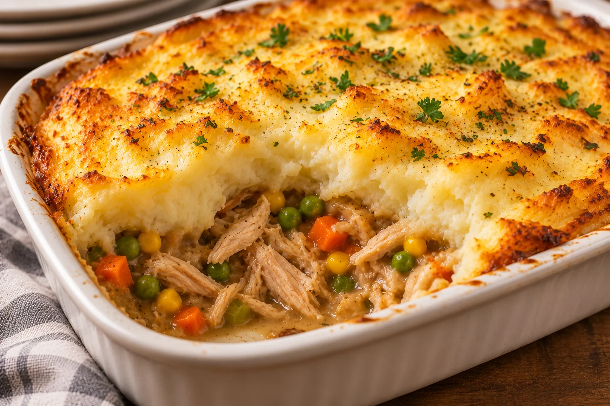
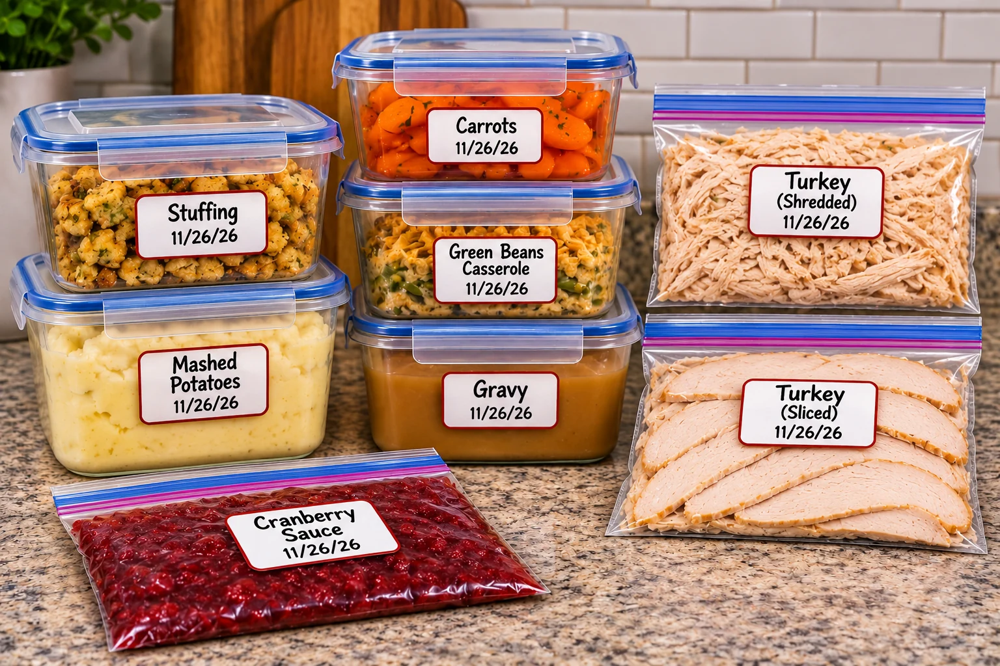

What to Do With Thanksgiving Leftovers
Easy Meals, Storage Tips & Freezer Ideas

Practical meal ideas, safe storage tips and a free printable to help use Thanksgiving leftovers before they go to waste.
Thanksgiving dinner is over, but the refrigerator may still be full of turkey, stuffing, mashed potatoes, gravy and vegetables. You do not have to eat the same plate for days. Use this guide to decide what to eat first, find easy new meals, and safely refrigerate or freeze the rest.
Take Inventory Before You Cook
Check what you have and when each dish was prepared. Group turkey, potatoes, stuffing, vegetables, rolls, cranberry sauce, gravy and desserts. Label containers with their original preparation date. Repackaging food or making a new dish does not make old leftovers fresh again.
| Leftover | Good starting ideas |
|---|---|
| Turkey | Melts, soup, quesadillas, rice, casseroles |
| Mashed potatoes | Potato cakes, shepherd’s-pie-style bake |
| Stuffing | Waffles, turkey-and-stuffing bake |
| Cranberry sauce | Sandwich spread, cream-cheese topping |
| Vegetables | Soup, frittata, leftover bowls |
| Dinner rolls | Turkey sliders |
| Gravy | Turkey bowls, casserole filling |
What to Use First
Safety comes before texture: prioritize food that was cooked earliest or may be approaching its safe storage limit. Properly refrigerated cooked leftovers generally keep 3–4 days at 40°F or below. Discard perishable food left at room temperature for more than 2 hours (1 hour above 90°F). Smell or appearance cannot prove food is safe.
For best quality, use rolls before they stale, crisp-topped casseroles before toppings soften, and cooked vegetables while their texture is still appealing. Portion turkey so you do not repeatedly heat the entire batch. Freeze anything you will not eat in time, ideally sooner rather than at the end of the storage window.
Find a Meal From What You Have
The two illustrated guides show 14 ways to turn leftovers into new meals. The table matches those ideas, with two additional options noted afterward.


| What you have | Make this |
|---|---|
| Turkey + cranberry + bread + cheese | Turkey cranberry melt |
| Turkey + tortillas + cheese | Turkey quesadillas |
| Turkey + broth + vegetables | Turkey vegetable soup |
| Turkey + promptly chilled rice + vegetables | Turkey fried rice |
| Turkey + stuffing + gravy | Turkey and stuffing bake |
| Turkey + mashed potatoes + vegetables + gravy | Thanksgiving shepherd’s pie |
| Turkey + rolls + cheese + cranberry sauce (optional) | Turkey sliders |
| Mashed potatoes + egg + flour | Crispy mashed potato cakes |
| Stuffing + egg (broth if needed) | Stuffing waffles |
| Plain mashed sweet potatoes + egg + flour | Sweet potato pancakes |
| Cooked vegetables + eggs (cheese optional) | Vegetable frittata |
| Cream cheese + cranberry sauce | Cranberry cream cheese spread |
| Turkey + stuffing + cranberry sauce + rolls | Mini Thanksgiving sandwiches |
| Leftover pumpkin pie + yogurt | Pumpkin pie parfaits |
Another way to use what you have: turkey and biscuit bowls (turkey + gravy + biscuits), explained later in this guide.
Easy Turkey Meals

Turkey Cranberry Melts | about 10–15 minutes
Layer cooked turkey, cranberry sauce and Swiss, cheddar or provolone between slices of bread. Butter the outside and toast over medium-low heat, turning once. Ensure the turkey filling reaches 165°F without scorching the bread.
Turkey Quesadillas | about 15 minutes
Fill a tortilla with shredded turkey, cheese and optional cooked vegetables. Fold and brown in a lightly oiled skillet on both sides; check the filling reaches 165°F.
Turkey Vegetable Soup | about 25–35 minutes
Simmer chopped onion, celery and carrots in broth until tender. Add cooked vegetables if available, plus shredded turkey near the end. Bring the soup to a rolling boil when reheating leftovers; add noodles or properly stored cooked rice if desired.
Turkey Fried Rice | about 15–20 minutes
Stir-fry cooked vegetables in a little oil and scramble an egg until fully cooked. Use rice that was cooled and refrigerated promptly after its original cooking; break up any clumps before adding it to the skillet with chopped turkey. Stir-fry until the mixture is thoroughly heated to 165°F, then season with soy sauce and garlic. Never use rice that sat at room temperature for an extended period.
Turkey Sliders | about 15–20 minutes
For mini Thanksgiving sandwiches like those in the ingredient finder, layer cooked turkey, stuffing and a little cranberry sauce inside split dinner rolls. Warm the filling thoroughly before assembling, or heat the assembled sandwiches until the center reaches 165°F.
Fill split dinner rolls with turkey and cheese. Brush with butter and bake at 350°F until toasted and the turkey reaches 165°F. Add cranberry sauce after heating.
Give Thanksgiving Sides a Second Life

Mashed Potato Cakes | about 15–20 minutes
Mix 2 cups cold mashed potatoes with 1 egg and 2–4 tablespoons flour. If the mixture is too soft to shape, add flour 1 tablespoon at a time; chilling briefly may also help. Shape small patties and cook in a lightly oiled skillet until golden on both sides and the center reaches 165°F. Season to taste, keeping in mind that the original potatoes may already be salted.
Stuffing Waffles | about 10–15 minutes
Mix 2 cups chilled cooked stuffing with 1 beaten egg; add a splash of broth if dry. Fully preheat and grease the waffle iron, add a modest portion and cook until a firm golden crust develops. Avoid opening the iron too early or the waffle may break apart. Check the center reaches 165°F before serving.
Sweet Potato Pancakes | about 15–20 minutes
Start with 1 cup plain or lightly seasoned mashed sweet potatoes, then mix with 1 egg, ¼ cup flour and a splash of milk. Cook small pancakes in a lightly greased skillet until set and the center reaches 165°F. Sweet potato casserole with marshmallows or a sugary topping is not a direct substitute; its added sugar and moisture can change the results.
Vegetable Frittata | about 20–25 minutes
Whisk 6 eggs with a splash of milk; add 1–2 cups chopped cooked leftover vegetables and some cheese. Bake in a greased shallow oven-safe dish at 350°F until fully set and the center reaches 165°F, approximately 15–20 minutes depending on depth. Use a thermometer rather than relying on appearance.
Cranberry Cream Cheese Spread | about 5 minutes
Swirl leftover cranberry sauce into softened cream cheese and serve promptly with crackers or toasted rolls. Refrigerate any remaining spread promptly.
Combine Several Leftovers

Turkey and Stuffing Bake | about 25–40 minutes
Place cooked turkey in a shallow dish with enough gravy or broth to moisten; cover with stuffing. Bake at 350°F until the center reaches 165°F. Uncover briefly to crisp the top.
Thanksgiving Shepherd’s-Pie-Style Bake | about 30–40 minutes
Layer turkey and cooked vegetables with gravy in a shallow dish. Spread mashed potatoes on top and bake at 375°F until the center reaches 165°F. Broil briefly for color if desired.
Thanksgiving Leftover Bowls | about 10–15 minutes
Warm turkey, vegetables, potatoes or rice and gravy separately until safely heated, then assemble bowls. Serve cranberry sauce on the side.
Turkey and Biscuit Bowls | about 15–20 minutes
Bring turkey and gravy to a thorough heat on the stovetop, boiling the gravy and checking the turkey reaches 165°F. Spoon over split biscuits.
Thanksgiving Pie Leftovers
For quick pumpkin pie parfaits, spoon small pieces of properly refrigerated pumpkin pie into individual glasses and layer with plain or vanilla yogurt. Serve immediately, and keep the assembled parfaits refrigerated until serving. Use the original pie preparation date when deciding how long leftovers can be kept.
Refrigeration rules vary by pie filling. Commercial shelf-stable pies may have different unopened storage instructions. When in doubt, check the original recipe or package guidance.
Food-Safety Note for Desserts
Pumpkin and pecan pies are perishable: refrigerate promptly and generally use within 3–4 days. For best quality, pumpkin and pecan pies may be frozen for about 1–2 months; custard and chiffon pies often freeze poorly. Apple pie storage depends on its ingredients and preparation, so follow the recipe or manufacturer’s instructions. Serve properly stored leftover pie in small portions or crumble a little into yogurt just before eating. Do not use pies that sat out beyond safe limits.
Store, Freeze and Reheat Safely
Refrigerate perishable foods within 2 hours of cooking or serving (within 1 hour if above 90°F), divided into shallow containers at 40°F or below. Freeze at 0°F or below. Most properly handled cooked leftovers keep 3–4 days refrigerated. Food left out longer than the safe limit must be discarded: reheating does not reliably make improperly stored food safe. The refrigerator clock begins when the food was originally prepared, not when it is repackaged or reused.
| Food | Refrigerator | Freezer quality notes |
|---|---|---|
| Cooked turkey | 3–4 days | Suggested quality target: 2–6 months |
| Stuffing / cooked casseroles | 3–4 days | Suggested quality target: 1–3 months |
| Mashed potatoes / sweet potatoes | 3–4 days | Suggested quality target: 1–2 months; texture varies |
| Cooked vegetables | 3–4 days | Suggested quality target: 2–3 months |
| Gravy | 3–4 days | Suggested quality target: 2–3 months |
| Pumpkin or pecan pie | 3–4 days | About 1–2 months for best quality |
| Custard or chiffon pie | 3–4 days | Freezing not recommended |

To freeze: divide into meal-size portions, use freezer-safe packaging, remove excess air, label with the food and original cooking date, and freeze while still within the safe refrigeration period. Leave headspace for gravy or soup. Freeze bread separately for best texture.
Reheat most cooked leftovers to 165°F at the center, using a food thermometer. Cover and stir microwave portions; stir skillet meals and check the thickest areas. Bring soups and gravies to a rolling boil. Approximate reheating times depend on serving size, dish depth and appliance. For safe thawing, use the refrigerator, cold water or microwave; reheat immediately after cold-water or microwave thawing.
Three-Day Thanksgiving Leftover Plan
| Day | Lunch | Dinner |
|---|---|---|
| Friday | Turkey cranberry melts | Turkey and stuffing bake |
| Saturday | Turkey quesadillas | Shepherd’s-pie-style bake |
| Sunday | Turkey sliders | Turkey vegetable soup |
For breakfast, consider potato cakes or stuffing waffles. This is an example, not a required schedule. If food was prepared on Thanksgiving Thursday and promptly refrigerated, eat or freeze it by Monday (day four). Anything prepared earlier may need to be used sooner. Freeze portions early when you know you will not eat them within the safe window.
Free Thanksgiving Leftovers Cheat Sheet
Free Thanksgiving Leftovers Cheat Sheet
Print the two-page ingredient finder, storage reference, leftover inventory and meal planner.
Download the Free Printable (PDF)The companion two-page printable includes the matching 14-row leftover ingredient finder, safe-storage reminders, what-to-use-first checklist, eight-row inventory and a three-day meal planner. A Thursday-to-Monday example helps readers track the four-day refrigerator window.
Make the Most of Thanksgiving Leftovers
Start with a quick inventory, build meals around the ingredients already in the refrigerator, and freeze what you cannot use promptly. A little planning can turn Thanksgiving dinner into several easy meals without cooking another feast.
Related Thanksgiving Guides
Food-safety references: FoodSafety.gov Cold Food Storage Chart and Safe Minimum Internal Temperatures. Follow the original recipe or package instructions where they are stricter.